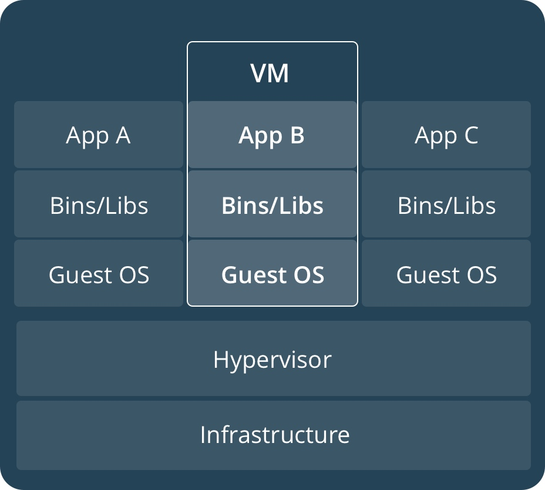
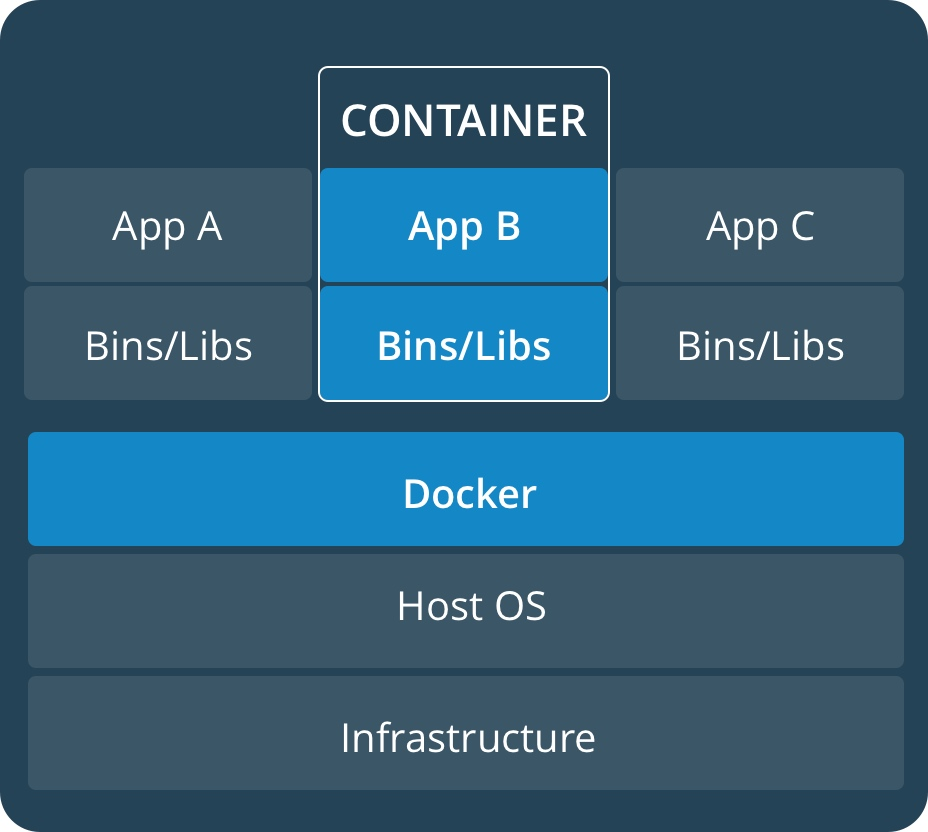

docker容器技术基础入门
容器(Container)
- 容器是一种基础工具；泛指任何可以用于容纳其他物品的工具，可以部分或完全封闭，被用于容纳、储存、运输物品；物体可以被放置在容器中，而容器则可以保护内容物；
- 人类使用容器的历史至少有十万年，甚至可能有数百万年的历史；
- 容器的类型
- 瓶 - 指口部比腹部窄小、颈长的容器
- 罐 - 指那些开口较大、一般为近圆筒形的器皿
- 箱 - 通常是立方体或圆柱体。形状固定
- 篮 - 以条状物编织而成
- 桶 - 一种圆柱形的容器
- 袋 - 柔性材料制成的容器，形状会受内容物而变化
- 瓮 - 通常是指陶制，口小肚大的容器
- 碗 - 用来盛载食物的容器
- 柜 - 指一个由盒组成的家具
- 鞘 - 用于装载刀刃的容器
传统虚拟化与容器的区别
 
虚拟化分为以下两类：
- 主机级虚拟化
- 全虚拟化
- 半虚拟化
- 容器级虚拟化
容器分离开的资源：
- UTS(主机名与域名)
- Mount(文件系统挂载树)
- IPC
- PID进程树
- User
- Network(tcp/ip协议栈)
Linux容器技术
Linux容器其实并不是什么新概念。最早的容器技术可以追遡到1982年Unix系列操作系统上的chroot工具（直到今天，主流的Unix、Linux操作系统仍然支持和带有该工具）。
Linux Namespaces
命名空间(Namespaces)是Linux内核针对实现容器虚拟化而引入的一个强大特性。
每个容器都可以拥有自己独立的命名空间，运行其中的应用都像是在独立的操作系统中运行一样。命名空间保证了容器间彼此互不影响。
| namespaces | 系统调用参数 | 隔离内容 | 内核版本 |
|---|---|---|---|
| UTS | CLONE_NEWUTS | 主机名和域名 | 2.6.19 |
| IPC | CLONE_NEWIPC | 信号量、消息队列和共享内存 | 2.6.19 |
| PID | CLONE_NEWPID | 进程编号 | 2.6.24 |
| Network | CLONE_NEWNET | 网络设备、网络栈、端口等 | 2.6.29 |
| Mount | CLONE_NEWNS | 挂载点（文件系统） | 2.4.19 |
| User | CLONE_NEWUSER | 用户和用户组 | 3.8 |
CGroups
控制组(CGroups)是Linux内核的一个特性，用来对共享资源进行隔离、限制、审计等。只有能控制分配到容器的资源，Docker才能避免多个容器同时运行时的系统资源竞争。
控制组可以提供对容器的内存、CPU、磁盘IO等资源进行限制。
CGroups能够限制的资源有：
- blkio：块设备IO
- cpu：CPU
- cpuacct：CPU资源使用报告
- cpuset：多处理器平台上的CPU集合
- devices：设备访问
- freezer：挂起或恢复任务
- memory：内存用量及报告
- perf_event：对cgroup中的任务进行统一性能测试
- net_cls：cgroup中的任务创建的数据报文的类别标识符
具体来看，控制组提供如下功能：
- 资源限制（Resource Limitting）组可以设置为不超过设定的内存限制。比如：内存子系统可以为进行组设定一个内存使用上限，一旦进程组使用的内存达到限额再申请内存，就会发出Out of Memory警告
- 优先级（Prioritization）通过优先级让一些组优先得到更多的CPU等资源
- 资源审计（Accounting）用来统计系统实际上把多少资源用到合适的目的上，可以使用cpuacct子系统记录某个进程组使用的CPU时间
- 隔离（Isolation）为组隔离命名空间，这样一个组不会看到另一个组的进程、网络连接和文件系统
- 控制（Control）挂起、恢复和重启等操作
安装Docker后，用户可以在/sys/fs/cgroup/memory/docker/目录下看到对Docker组应用的各种限制项，包括
[root@localhost ~]# cd /sys/fs/cgroup/memory/
[root@localhost memory]# ls
cgroup.clone_children memory.kmem.slabinfo memory.memsw.limit_in_bytes memory.swappiness
cgroup.event_control memory.kmem.tcp.failcnt memory.memsw.max_usage_in_bytes memory.usage_in_bytes
cgroup.procs memory.kmem.tcp.limit_in_bytes memory.memsw.usage_in_bytes memory.use_hierarchy
cgroup.sane_behavior memory.kmem.tcp.max_usage_in_bytes memory.move_charge_at_immigrate notify_on_release
memory.failcnt memory.kmem.tcp.usage_in_bytes memory.numa_stat release_agent
memory.force_empty memory.kmem.usage_in_bytes memory.oom_control system.slice
memory.kmem.failcnt memory.limit_in_bytes memory.pressure_level tasks
memory.kmem.limit_in_bytes memory.max_usage_in_bytes memory.soft_limit_in_bytes user.slice
memory.kmem.max_usage_in_bytes memory.memsw.failcnt memory.stat
用户可以通过修改这些文件值来控制组限制Docker应用资源。
LXC
通过传统方式使用容器功能的话需要我们自己写代码去进行系统调用来实现创建内核，实际上拥有此能力的人廖廖无几。而LXC（LinuX Container）把容器技术做得更加易用，把需要用到的容器功能做成一组工具，从而极大的简化用户使用容器技术的麻烦程度。
LXC是最早一批真正把完整的容器技术用一组简易使用的工具和模板来极大的简化了容器技术使用的一个方案。
LXC虽然极大的简化了容器技术的使用，但比起直接通过内核调用来使用容器技术，其复杂程度其实并没有多大降低，因为我们必须要学会LXC的一组命令工具，且由于内核的创建都是通过命令来实现的，通过批量命令实现数据迁移并不容易。其隔离性也没有虚拟机那么强大。
后来就出现了docker，所以从一定程度上来说，docker就是LXC的增强版。
docker基本概念
docker是容器技术的一个前端工具，容器是内核的一项技术，docker只是把这一项技术的使用得以简化，使之普及而已。
LXC进行大规模创建容器很难，想在另一台主机上复刻一个一模一样的容器也很难，而docker就是从这方面着手去找解决方案。所以docker早期的版本其核心就是一个LXC，docker对其进行了二次封装，功能的实现是通过LXC做容器管理引擎，但是在创建容器时，不再是像LXC一样用模板去现场安装，而是事先通过一种类似镜像技术，就像在KVM中一样，将一个操作系统打包成一个镜像，然后将这个镜像拷贝到目标主机上直接部署启动。
我们可以尝试着把一个操作系统用户空间需要用到的所有组件，事先准备、编排好，编排好以后整体打包成一个文件，这个文件我们称其为镜像文件（image）。
docker的镜像文件是放在一个集中统一的互联网仓库中的，把一些人们常用的镜像文件放在互联网仓库中，比如最小化的centos系统，有时我们需要在操作系统上安装一些应用，比如nginx，我们就可以在一个最小化的centos系统中安装一个nginx，然后将其打包成镜像，将其放在互联网仓库中，当人们想启动一个容器的时候，docker会到这个互联网仓库中去下载我们需要的镜像到本地，并基于镜像来启动容器。
自docker 0.9版本起，docker除了继续支持LXC外，还开始引入自家的libcontainer，试图打造更通用的底层容器虚拟化库。如今的docker基本上都已经是使用libcontainer而非LXC了。
从操作系统功能上看，docker底层依赖的核心技术主要包括Linux操作系统的命名空间、控制组、联合文件系统和Linux虚拟网络支持。
docker工作方式
为了使容器的使用更加易于管理，docker采取一个用户空间只跑一个业务进程的方式，在一个容器内只运行一个进程，比如我们要在一台主机上安装一个nginx和一个tomcat，那么nginx就运行在nginx的容器中，tomcat运行在tomcat的容器中，二者用容器间的通信逻辑来进行通信。
LXC是把一个容器当一个用户空间使用，当虚拟机一样使用，里面可以运行N个进程，这就使得我们在容器内去管理时极为不便，而docker用这种限制性的方式，在一个容器中只运行一个进程的方式，使得容器的管理更加方便。
使用docker的优劣：
- 删除一个容器不会影响其他容器
- 调试不便，占空间(每个容器中都必须自带调试工具，比如ps命令)
- 分发容易，真正意义上一次编写到处运行，比java的跨平台更彻底
- 部署容易，无论底层系统是什么，只要有docker，直接run就可以了
- 分层构建，联合挂载
在容器中有数据称作有状态，没有数据称作无状态。在容器的使用中，我们应以有状态为耻，以无状态为荣。数据不应该放在容器中，而应放置于外部存储中，通过挂载到容器中从而进行数据的存储。
docker容器编排
当我们要去构建一个lnmp架构的时候，它们之间会有依赖关系，哪个应用应该在什么时候启动，在谁之前或之后启动，这种依赖关系我们应该要事先定义好，最好是按照一定的次序实现，而docker自身没有这个功能，所以我们需要一个在docker的基础上，能够把这种应用程序之间的依赖关系、从属关系、隶属关系等等反映在启动、关闭时的次序和管理逻辑中，这种功能被称为容器编排。
有了docker以后，运维的发布工作必须通过编排工具来实现容器的编排，如果没有编排工具，运维人员想去管理容器其实比直接管理程序要更加麻烦，增加了运维环境管理的复杂度。
常见的容器编排工具：
- machine+swarm(把N个docker主机当一个主机来管理)+compose(单机编排)
- mesos(实现统一资源调度和分配)+marathon
- kubernetes --> k8s